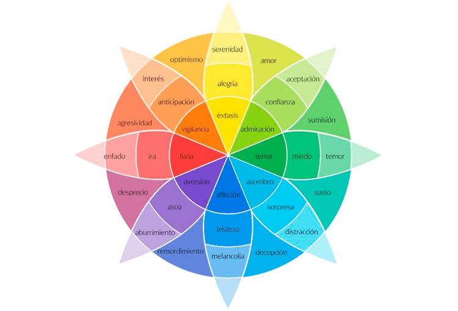
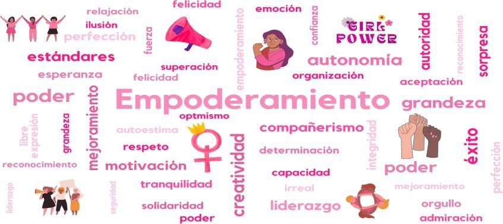
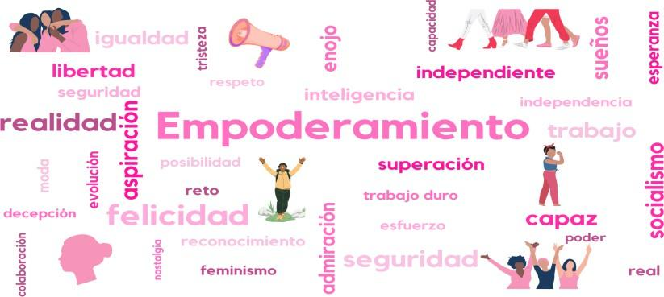
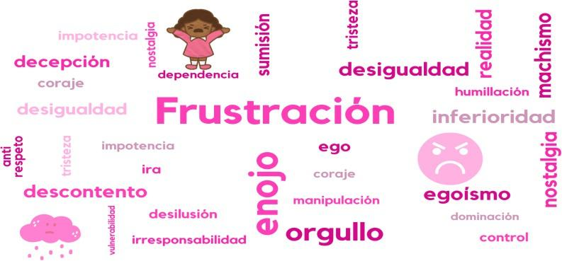
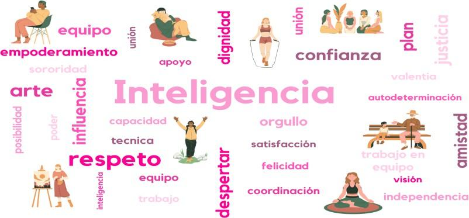
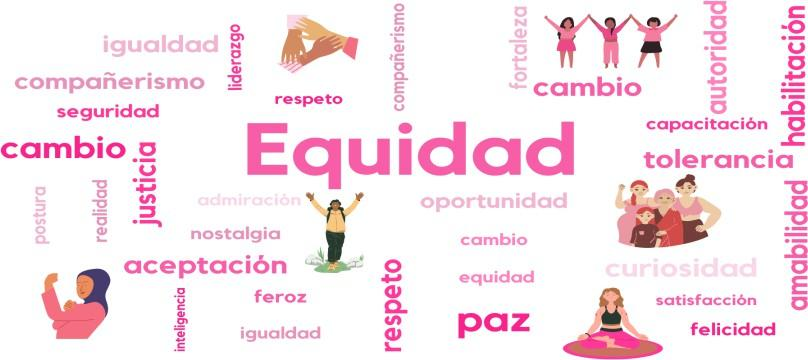

Resumen.
El trabajo aborda los estereotipos de género centrados en la influencia de la imagen de Barbie. Se analiza la influencia de la película en mujeres universitarias mexicanas, destacando como refleja y afecta las percepciones de género en la sociedad a través de las emociones. Se utiliza una metodología de test de asociación de palabras de Jung y la rueda de las emociones de Plutchik. Los principales hallazgos identifican que las emociones que despiertan los estereotipos de mujeres autónomas, y profesionales, son la anticipación y sorpresa; los estereotipos sobre mujeres déspotas y feministas, despiertan la confianza y el asco; mientras que el estereotipo de mujeres sumisas-empoderadas se asocia a la ira y el miedo.
Palabras clave:
Estereotipos de género; emociones; película Barbie.
Abstract.
The work addresses gender stereotypes centered on the influence of the image of Barbie. The influence of the film on Mexican university women is analyzed, highlighting how it reflects and affects gender perceptions in society through emotions. A Jungian word association test methodology and Plutchik's wheel of emotions are used. The main findings identify that the emotions that arouse the stereotypes of autonomous and professional women are anticipation and surprise; the stereotypes about despotic and feminist women arouse trust and disgust; while the stereotype of submissive-empowered women is associated with anger and fear.
Keywords:
Gender stereotypes, emotions, Barbie the movie.
En principio es necesario reconocer que con el paso del tiempo se ha logrado modificar algunos estereotipos de género, sin embargo, siguen existiendo otros que se encuentran arraigados en la sociedad, debido a que son conductas que se tienen pre configuradas culturalmente. En este sentido, y dado la controversia generada en los últimos años por la película Barbie (Gerwig, 2023), que muestra ambas caras de la moneda, el estereotipo tradicional centrado en los estándares de belleza femenina, pero que presenta la narrativa orientada a que las mujeres pueden ser lo que quieren ser, este trabajo de investigación se enfoca en analizar el efecto emocional de la representación de estereotipos del género femenino en la película Barbie (Gerwig, 2023), en mujeres universitarias mexicanas. Se busca comprender cómo estas representaciones impactan la percepción de género, la autoestima y el bienestar emocional de las estudiantes.
Se eligió utilizar como parte del objeto de estudio esta película, no solo por su polémico contenido, sino por el alcance que ha tenido su proyección a nivel mundial, además de que la cinematografía es una de las artes consideradas como de mayor influencia cultural, social y económica, y es un medio de comunicación que refleja y moldea la sociedad (UNESCO, 2021), por lo que juega un papel como transmisor y replicador de estereotipos.
El presente trabajo de investigación, utiliza una metodología cualitativa, ya que se busca identificar las emociones que surgen de los estereotipos que se presentan en la película Barbie (Gerwig, 2023). El trabajo de campo de la investigación se realiza por medio de focus group, a través de preguntas abiertas y cerradas para identificar características de escenas de la película y de los estereotipos existentes en ella.
En este sentido, es reconocido que los estereotipos de género son una categorización creada por la sociedad, que determina una serie de expectativas diferenciadas por el sexo, sobre el comportamiento que se debe cumplir como parte de la misma (Galán, 2021), de manera tal que se traducen en opiniones y prejuicios generalizados que se asignan a una persona con atributos específicos que diferencian entre lo masculino y lo femenino.
Este fenómeno se da desde muy temprana edad por medio de los juegos, donde los juguetes tienen un rol muy importante en la configuración de estereotipos. El impacto que causan los juguetes en los niños y las niñas, influye en determinar quién quieren ser, a quién quieren parecerse, y por ende los lleva a actuar como ellos. En el caso de la muñeca Barbie, las niñas crecen con esta imagen de mujer ultrafemenina, de cuerpo y piel perfecta, por lo tanto, influye como un determinante del proceso de socialización de los roles de género con una imagen corporal poco realista y un estilo de vida perfecto (Uncu, 2019), lo que de alguna manera las obliga a ajustarse a estándares de belleza, sociales y económicos poco realistas en la actualidad, que también repercute en las aspiraciones y capacidades que las mujeres quieren desarrollar, lo que llega a limitar las identidades de género y condiciona las orientaciones sexuales, por lo que el estereotipo que se ha desarrollado en torno a la muñeca Barbie ha contribuido con la presión social y cultural sobre las niñas y mujeres mexicanas (Aksu,2005).
Barbie fue creada como un juguete, asociado a la moda, la muñeca presenta la imagen de una mujer con cuerpo perfecto, siempre arreglada y atractiva, por lo que, desde la primera creación de Barbie en 1959, está ha fomentado un estereotipo infantil en el que la mujer siempre debe estar hermosa para satisfacer el gusto o deseos de los hombres, sin embargo, ante los reclamos sociales con respecto a la cosificación femenina, los derechos e igualdad femenina de los últimos años, la marca, ha introducido nuevos productos que incluyen diversidad racial y caracterización profesional de la muñeca, ha modificado su narrativa y publicidad en torno a ella (Mattel, 2024), el mensaje actual que busca transmitir la marca Barbie es “girls can do anything” (las niñas pueden ser lo que quieran ser), que hace alusión a la idea de que las mujeres son capaces de superar cualquier obstáculo o tomar cualquier decisión en la vida.
Aunado a lo anterior, en el 2023 se estrena la película Barbie dirigida por Greta Gerwig, que por primera vez es caracterizada por actores y no utiliza personajes animados, la cual consigue un éxito sin precedentes al ingresar más de mil millones de dólares en sus tres primeras semanas de estreno (Muy interesante, 2023), hasta llevarla a las plataformas de streaming, a finales del mismo año rompiendo también records de reproducción y ser nominada y ganadora de diversos premios cinematográficos y musicales.
En la película, el personaje principal de Barbie se representa bajo el estereotipo tradicional asociado a la perfección femenina, que supone que la apariencia y la sumisión femenina es el valor más importante que tiene una mujer y hace hincapié en la heteronormatividad social del personaje. La trama esta recreada en un lugar gobernado por los personajes femeninos, donde todo es objeto de perfección y los personajes masculinos, aparecen como secundarios.
Conforme avanza la trama, los cuestionamientos existenciales de Barbie, abren la puerta para repensar algunos estereotipos femeninos, ella no se reconoce a sí misma ni el lugar en el que esta, cuestiona su propia identidad, su autoestima se ve afectada y su interacción con el resto de personajes se ve alterada, por lo que emprende un viaje al mundo real para comprender qué le está sucediendo. En su travesía por el mundo real, Barbie enfrenta acoso, violencia y represión al intentar ser regresada a su normalidad, sin tener respuestas, mientras que Ken, el personaje masculino, conoce el patriarcado, y regresa a su mundo a imponer la hegemonía masculina y la sumisión femenina.
Ante la enajenación patriarcal dentro del mundo de Barbie, el personaje principal recurre a una mujer del mundo real, quien a través de un discurso sobre las expectativas que la sociedad en su conjunto tiene de las mujeres, hace que recupere la confianza en sí misma y decide romper con la enajenación del sistema patriarcal impuesto en su mundo; para finalmente, tomar conciencia de las fallas de su mundo anterior, proponiendo un espacio de mayor igualdad para los personajes masculinos, y aquéllos que no encarnan el estándar de la perfección. Barbie decide abandonar su mundo de ficción y ser una mujer en el mundo contemporáneo.
A continuación, se presenta la revisión de la literatura que permite reconocer tanto la evolución del tema de investigación del presente trabajo, así como los conceptos que sirven como delimitación del marco teórico que se utiliza para analizar el fenómeno descrito con anterioridad.
Con respecto a los estereotipos de género, el contexto económico, social, cultural e histórico desempeñan un papel importante en la construcción de los estereotipos, esto hace que se produzcan y reproduzcan de una forma subjetiva, por lo que son generadores de prejuicios y discriminación, ya que corresponden a una creencia o idea diferenciada entre lo que deben ser y hacer los hombres y mujeres (Tijoux, 2022), siendo un obstáculo para lograr una verdadera igualdad de género, ya que además promueven expectativas sobre las personas que conforman grupos sociales particulares (Consejo de Europa, 2015).
Para Fernández (2016) y Tijoux (2022), los estereotipos son creados a partir de tradiciones ideologías y religiones que se desprenden de las interacciones sociales, por lo tanto, son creadas dentro de un colectivo. Mientras que para Eagly y Kittie (1987) y Eagly y Wood (2012), los estereotipos de género se definen, como una dinámica influenciada y diferenciada por los roles que desempeñan mujeres y hombres en la sociedad, los cuales tiene como origen las diferencias fisiológicas y físicas entre ellos, y se ven fortalecidos por la cultura, ya que obligan a los individuos a representar roles sociales específicos. En el caso de los estereotipos aceptados como parte de cultura mexicana, las mujeres se han caracterizado principalmente por acotar un rol materno y doméstico, se espera que tengan un fuerte sentido de la familia y de cuidado de sus seres queridos y a menudo, son percibidas como religiosas (Ojeda y González, 2018). De manera tal, que los estereotipos y los roles de género son un mecanismo de la heteronormatividad social, que fomenta la desigualdad y la falsa creencia de inferioridad sobre las mujeres para realizar actividades públicas, políticas y desempeñar prácticas sociales, para quienes se ha designado el rol de madre, esposa y ama de casa (Morondo, 2023), lo que tiene un efecto a niveles colectivo e individual, ya que las mujeres tengan libertad de elección, oportunidades y justifica la jerarquía social.
Los medios de comunicación también son un factor importante para la reproducción de estereotipos de género de las mujeres debido a que sus contenidos, fomentan e influyen en los deseos, intereses y aspiraciones de las personas, lo que puede modificar su personalidad (Bonavitta y Garay, 2011). Para Alfarache (2003), los estereotipos femeninos representados en los medios de comunicación, se desprenden de un modelo androcentrista y son resultado de un prejuicio que tiene como origen el patriarcado, en donde tanto los medios de comunicación, como los contenidos cinematográficos, crean y distribuyen los ideales de belleza para los cuerpos, las mentes y los sentimientos de las mujeres, que al no cumplir con estos estereotipos, les genera frustración, decepción, ansiedad, depresión y falta de autoestima (Serret, 2008), la cual continua disminuyendo mientras más contenido se consuma (Grabe et al., 2008), donde esta preocupación por la imagen corporal tiene consecuencias psicológicas, emocionales y físicas (Tiggemann, 2014).
En este sentido, las películas al igual que los juguetes, conforman un momento de aprendizaje para la construcción del yo (Jane et al., 2023), debido a que contribuyen en la internalización de normas y expectativas de uno mismo (Signorella y Liben, 1984), llegan a universalizar creencias y opiniones que se estructuran como reglas sociales (de la Vega, 2010), por lo que los estereotipos representados en las películas consciente o inconscientemente (Plaza y Delgado, 2007), pueden limitar el potencial y la libertad de elección, ya que son capaces de influir de forma significativa en las actitudes, valores y opiniones de sus consumidores (Morales, 2015), y normalizar lo ahí presentado para desarrollar prejuicios a partir de lo que no es aceptado, reconocido y/o reflejado en las películas. Para Palominos (2006, citado en Oberlin, 2021), los individuos se ven afectados por los mensajes que se transmiten en los contenidos audiovisuales, lo que determina su proceso de socialización y les confiere las conductas aceptadas por la sociedad.
Con respecto a los estereotipos de género en el cine, estos marcan el tipo de relación entre los sexos, donde lo masculino es considerado superior a lo femenino y sustenta su gen discriminatorio, lo que justifica las situaciones de desigualdad que las mujeres han vivido en todas las sociedades (Amurrio et al., 2012), las cuales son subrepresentadas en roles principales, cuyos papeles tienen una menor complejidad en las tramas y narrativas en comparación con los hombres Maryann (2015), y aun cuando han ido ganando mayor visibilidad, la representación de ellas, no va al mismo ritmo que las demandas sociales (Ojeda y Cabezas, 2023).
En la actualidad, los contenidos audiovisuales siguen presentado roles, estereotipos y personajes limitados y diferenciados sobre lo masculino y lo femenino, que pareciera no reconocer que estas representaciones son capaces de modificar hábitos y costumbres de la sociedad (Ferraro 2022). Para Pérez (2020), los estereotipos de género mostrados en el cine afectan negativamente a hombres y mujeres, ya que son usados para condicionar de cierta manera la libertad de los individuos para salirse de lo ya preestablecido por la sociedad y los estereotipos de las mujeres tienen menor prestigio que los de los hombres (Vélez et al., 2012), ellas siguen siendo presentadas como tiernas, débiles, sumisas y dependientes, mientras que ellos son asociados con la razón, la autoridad, la independencia y la rudeza.
Para Glick et al., (2000), la exposición de contenidos de índole sexista influye directamente en las actitudes de las personas ya sean hombres o mujeres. Además, se ha evidenciado como las mujeres espectadoras de producciones cinematográficas y televisivas pueden ser susceptibles a construir un ideal de cuerpo femenino de fantasía a través de imágenes fijas y en movimiento (Mills, 2002) y cómo esto afecta su satisfacción corporal (Leahey et al., 2011).
Para Ferraro (2022), el relacionar a cada género con las características propias de cada identidad incentiva su relación con el rol, por lo que el papel principal de la representación de los estereotipos, es mantener a lo que llama: “patriarcado de consentimiento”, cuyo sistema social define que las normas y los roles de género se establecen y mantienen a través de la conformidad y el consentimiento de las mujeres, en lugar de la violencia por lo que ellas se ven incentivadas para cumplir con los roles asignados; las mujeres que no lo hacen, se les hace sentir culpables.
Con respecto a los estereotipos históricamente asociados con la muñeca Barbie, como ya se dijo, se encuentra el de la perfección y un estándar de belleza idealizada que se ajusta a los valores, características y comportamientos tradicionalmente aceptados en el occidente: ama de casa, modelo o princesa, con actitudes de pasividad, sumisión o dependencia al personaje masculino de Ken, lo que refuerza la idea de que las mujeres tienen menor capacidad de autonomía, son superficiales y se preocupan más por su apariencia física que por reflexiones profundas y problemas complejos, tan es así que la trama de la película, inicia cuando Barbie empieza a tener pensamientos sobre la muerte, y la consecuencia es tener celulitis y no poder caminar de puntillas (Marañón, 2023).
Para Brody (2023, citado en Bristiel, 2023), esta situación descrita en la película, cuestiona un aspecto emocional de las mujeres y el ideal de lo que la felicidad debería de ser, donde todo encaja en una vida perfecta y plena y no hay falta de nada, sin embargo, cuando Barbie va al mundo real, se da cuenta de la carga emocional contradictoria, la sexualidad naturalizada sobre su cuerpo, y que la perfección de su mundo que confiere el poder y la autonomía a las Barbies, es una construcción configurada desde la visión masculina del mundo ideal, en donde los personajes femeninos se han diseñado para ser los protagonistas pero con total dependencia de los Ken´s, y tener una orientación sexual diferente o romper con el estereotipo asignado, los lleva a la exclusión, la marginación e incluso al destierro. Desde el punto de vista de Tinat (2024), esto se explica porque el cine siempre va dirigido a un sujeto masculino, sin importar que el espectador sea mujer o tenga otra orientación sexual, debido a que el placer visual se crea a partir de las mujeres y narrativas construidas para volverlas un proyecto para hombres, como sucede en la escena donde Barbie se disculpa con Ken por hacerlo sentir mal y no haberle puesto atención suficiente, pero Ken a pesar del caos que creo en un entorno no social, da por sentado que está en el correcto y no pide disculpas.
No obstante, el efecto emocional de la película Barbie es diferente según el contexto personal de cada individuo, pero tiene el riesgo latente de tener efectos negativos por los estereotipos de género poco realistas que presenta, por ejemplo, a pesar de que la protagonista de la película – Margot Robbie- es reconocida por su belleza y clasificada dentro de algunos ranking de las mujeres más hermosas del mundo, ella tiene una crisis por sentir que no está a la altura de lo que se espera de ella, lo que promueve la autoexigencia entre las mujeres para buscar la perfección y cumplir con los estándares y sentirse aceptada por la sociedad, que de acuerdo con Heras (2023), esta autoexigencia contribuye con la aparición de depresión y ansiedad.
Otro aspecto que se ha analizado con respecto a la construcción, creación o ideación de estereotipos tiene que ver con el estatus social de las mujeres. De acuerdo con Torres e Izquierdo (2022), los estereotipos de género tienen el poder de cambiar las condiciones sociales de las mujeres, por lo que el estudio y seguimiento de la representación de los estereotipos de género –tanto visual, como discursivamente- es esencial para determinar la posible evolución de la situación social de las mujeres, por lo que se vuelve necesaria la clasificación de estereotipos de género, para poder evaluar cómo han cambiado a través del tiempo (Ibíd, 2022), desafortunadamente, trabajos como los de Pérez (2020), Marañón (2023), Bristiel (2023) y Tinat (2024), no son alentadores al respecto, ya que al revisar las narrativas y discursos que rodean a las mujeres en el ámbito audiovisual, se destaca que predominan las visiones negativas y la persistencia de arquetipos tradicionales, porque las mujeres suelen ser representadas de manera poco relevante, limitadas a aspectos cotidianos e íntimos, por lo que no se ha identificado una evolución significativa en los estereotipos de género a pesar del aumento en la producción y distribución de contenido audiovisual.
A pesar de que el cine constituye un potente instrumento cultural que influye de forma significativa en actitudes, valores y opiniones de sus consumidores, la capacidad crítica para identificar las influencias negativas y desenmascararlas en pro de la igualdad entre hombres y mujeres, no se ha desarrollado, la vida cotidiana sigue impregnada de roles y estereotipos sexistas que erosionan este objetivo social (Morales, 2015). Para Molina et al. (2024), la industria cinematográfica debe ser consciente de la responsabilidad social y el poder transformador que tiene en sus manos, ya que la representación que se haga de las mujeres puede contribuir a generar nuevos significados a partir de los pensamientos y sentimientos individuales, y crear un mundo simbólico sin presentar estereotipos sexistas.
Desde la teoría, Goffman (1976), reconoce que los contenidos mediáticos son responsables de una representación simbólica del género y cómo estos reflejan y perpetúan las normas y expectativas sociales asignadas al género, por lo que determinan las actitudes, prejuicios, creencias y predisposiciones sociales, ya sean de una manera positiva o negativa, hacia los temas tratados en los contenidos, lo que se traduce en el reforzamiento de actitudes preexistentes en los individuos (D’Adamo y García, 2007). En este sentido, se utilizan las premisas teóricas propuestas por Goffman (1976), para explicar cómo los estímulos que se reciben a través de los estereotipos de género representados en la película de Barbie, se trasladan a la vida real y tiene efectos emocionales entre jóvenes mujeres universitarias mexicanas.
Adicionalmente, se recuperan las propuestas de Bussey y Bandura (1999), para explicar cómo los roles y estereotipos de género se construyen a través de la interacción entre la cognición, el entorno social y los medios de comunicación, de manera tal que las representaciones desiguales que se hacen de hombres y mujeres en películas populares, perpetúan el androcentrismo, al reforzar la representación masculina como dominante de la femenina (Lauzen y Dozier, 2005), y esto influye en las emociones de las mujeres que son espectadoras de la película Barbie.
Con respecto a los estereotipos femeninos que se representan en la película de Barbie que se utilizan como parte del objeto de estudio de este trabajo, para delimitarlos se recurre a la clasificación propuesta por Hernández et al. (2023) (Ver tabla 1).
Tabla 1. Estereotipos femeninos en la película de Barbie
|
Estereotipo |
Descripción |
|
Mujer autónoma |
Es económicamente independiente, generalmente tiene pocos hijos y puede decidir si continúa o no con su relación de pareja. |
|
Mujer profesional |
Tiene una trayectoria laboral que genera empoderamiento y no tiene vínculos patriarcales del pasado. |
|
Sumisión empoderada |
Tiene independencia económica, pero depende emocionalmente de un hombre. |
|
Déspota |
Ejerce opresivamente su poder sobre hombres y mujeres, aprovechando su empoderamiento. |
|
Feminista |
Busca tener una relación de pareja basada en el respeto y la equidad, tiene capacidad reflexiva y analítica. |
Fuente: Elaborado a partir de Hernández, et al., (2023).
Finalmente, para analizar las emociones se recurre a la propuesta que Hochschild (1990), hace del trabajo de Goffman (1981), quien señala que las emociones son el resultado de los sentimientos de la vida cotidiana de los individuos, por lo que estos son igual de importantes que lo que se piensa o se hace; que son resultado de la influencia social, pero la importancia radica no en conocer los factores sociales que provocan la emoción, sino de qué manera operan los individuos ante la emoción misma, por lo que las emociones están relacionadas con la experiencia, la gestión, las normas, las estructuras y las ideologías como la de género (Hochschild, 1990).
Para caracterizar las emociones, se utiliza la rueda de emociones de Robert Plutchik (Plutchik y Kellerman, 1980), la cual está constituida por ocho emociones básicas y sus antagónicas: Alegría – tristeza; Anticipación – sorpresa; Asco – confianza; Ira – miedo, seguida de 24 emociones compuestas en 3 díadas como se observa en la figura 1.

Figura 1. Rueda de las emocionesFuente: Recuperado de Manshad y Petrovich, (2019).
El trabajo de investigación tiene un alcance de naturaleza exploratoria con recolección de datos y análisis cualitativos, ya que se busca responder la pregunta de investigación ¿Cuál es el efecto emocional de la representación de los estereotipos del género femenino de la película Barbie en las mujeres universitarias mexicanas? Este diseño de investigación obedece a que la delimitación empírica y las dimensiones del problema que se estudian, han sido poco estudiadas, porque resulta complejo formular hipótesis precisas generalizar los resultados debido a lo reciente del fenómeno (Sabino, 2006). En cuanto a la naturaleza cualitativa del diseño, esta permite formular diferentes preguntas de investigación, para explorar y comprender fenómenos desde una perspectiva contrastante entre el investigador y las participantes de la investigación (Ramírez y Arbesú, 2019).
Se lleva a cabo una triangulación de técnicas para la recolección de datos, en un primer momento se discute en focus group las percepciones, opiniones y emociones de las participantes con respecto a la película Barbie, para después aplicar un test de asociación de palabras propuesto por Jung (1910), en el que se presenta una palabra estímulo asociada a los estereotipos de género de la película y se registran las palabras asociadas por las participantes ante cada estimulo.
Se realizan tres focus group a través de la plataforma ZOOM, porque permite recabar información acerca de las percepciones, opiniones y vivencias de las participantes. Además, permite generar ideas novedosas durante la entrevista y centra su atención en la pluralidad de respuestas obtenidas de un grupo de personas, cuyo objetivo es la obtención de datos por medio de la percepción, los sentimientos, las actitudes y las opiniones de grupos de personas hasta alcanzar la saturación de información (Cortés, 2008); participan 6 mujeres en cada uno, ya que esta cantidad de permite una interacción efectiva entre participantes y moderadores (Powell y Single, 1996).
Cada sesión comenzó con una bienvenida e introducción sobre el propósito del estudio, seguida de una explicación sobre la confidencialidad de las respuestas proporcionadas y concluyó con expresiones de agradecimiento por la participación de los asistentes. En promedio, la duración de cada focus group fue de 1 hora. Las participantes además de ser mujeres universitarias mexicanas, tienen entre 19 y 24 años de edad, porque se busca obtener una perspectiva con una visión más profunda de las actitudes, preferencias y necesidades dentro del principal grupo etario al que se dirige la película.
Durante los focus group se presentan fragmentos de la película Barbie, que previamente fueron elegidos ya que representan los estereotipos de género identificados en la tabla 1. En la tabla 2, se presenta la descripción del fragmento de la película y el estereotipo con que se asoció.
Tabla 2 Estereotipos femeninos de género representados en la película Barbie
|
Fragmento de la película (minuto) |
Estereotipos de género |
|
Minuto 6:27 Barbie va manejando por Barbieland saludando a todas las demás y se da cuenta como hay Barbies constructoras, reporteras, presidenta, ganadoras del premio nobel en literatura y periodismo. Y también en la escena sale Barbie abogada que dice que el tema que defiende la pone sensible, sin embargo, expresa sus argumentos sin mezclar ambos, es decir… maneja la lógica y la emoción al mismo tiempo. |
Mujer autónoma: Es económicamente independiente, generalmente tiene pocos hijos y puede decidir si continúa o no con su relación de pareja. |
|
Minuto 2:47 En esta escena menciona como Barbie tiene su propio dinero, su propia casa, su propio auto y su propia carrera, “Barbie puede ser lo que quiera ser’’ las mujeres pueden serlo igual, y se vio reflejado en las niñas de la actualidad, ya que se son capaces de lograr cualquier cosa que se propongan. Se muestran imágenes de lo redactado. |
Mujer profesional: Tiene una trayectoria laboral que genera empoderamiento y no tiene vínculos patriarcales del pasado. |
|
Minuto 01:03:50 Aquí Ken se adueña de la casa de los sueños de Barbie y le dice que todas sus noches ahora son noches de chicos, incluso le dice que se lleve sus vestuarios. Y Barbie empieza a llorar por como Ken la trata. |
Sumisión empoderada: Tiene independencia económica, pero depende emocionalmente de un hombre. |
|
Minuto 01:17:25 En esta escena se muestran a las Barbies empezando un plan en donde se aprovechan de su empoderamiento, siendo más inteligentes y haciéndoles creer a los Ken que hay Barbies en apuros para desviar la atención, haciéndoles creer que ellos tienen el poder, para que cuando bajen la guardia todo vuelva a funcionar como antes con las Barbies empoderadas. |
Déspota: Ejerce opresivamente su poder sobre hombres y mujeres, aprovechando su empoderamiento. |
|
Minuto: 1:38:08 La presidenta hace un comentario hacía todos donde menciona como no todo debe de ser como antes sino más bien, que ninguna Barbie o Ken debe de vivir en las sombras y deciden darles puestos importantes también a los hombres como a las mujeres. |
Feminista: Busca tener una relación de pareja basada en el respeto y la equidad, tiene capacidad reflexiva y analítica. |
Fuente: Elaborado a partir de la película Barbie (2023) y Hernández et al. (2023).
Con respecto al test de asociación de palabras de Jung (1910), la técnica consiste en presentar escenas de la película de Barbie como estímulo, para que las participantes del focus group, de manera individual, puedan asociarlas con las emociones presentes en rueda de las emociones de Robert Plutchik (1980). Durante el focus group, se distribuye un enlace a un formulario de Google que contiene un total de 17 preguntas relacionadas las escenas que presentan los estereotipos femeninos. Se eligió este test de asociación de palabras, porque permite indagar sobre las emociones que los estereotipos presentes en la película, despiertan en las participantes de manera espontánea sin que se prefabriquen las respuestas de manera consciente.
Para analizar la información obtenida, se transcribieron las participaciones dentro de los focus group y se hizo un análisis de la narrativa centrada en los estereotipos presentados, así como en las emociones asociadas a cada uno de ellos. Para presentar los resultados, se utilizaron nubes de palabras, y se agruparon las emociones en torno a cada estereotipo analizado.
Los resultados empíricos obtenidos se presentan de manera simultánea con la discusión tanto de los hallazgos de otros autores como de las premisas teóricas que delimitan la investigación. Se presentan ordenados a partir de los estereotipos de género femenino que se analizaron y para cada uno de ellos se describen las emociones que las participantes del estudio asociaron a las escenas presentadas. Para los fragmentos de las participaciones recuperadas se utiliza la letra F para indicar el número de focus group en el que se presentó, y la letra P, para identificación interna de la participante que lo emitió.
El primer estereotipo que se analiza es el de mujer autónoma y que corresponde a la escena de la película en la que se muestra a la protagonista saludando a las mujeres representadas en diversas profesiones, como médicas, abogadas, políticas, constructoras, entre otras, donde las participantes recurrieron a palabras relacionadas como admiración, inspiración y empoderamiento, (ver imagen 2), lo que implica que para las mujeres que fueron parte de esta investigación, el ver representado el estereotipo de una mujer autónoma, les evoca una emoción anticipación y sorpresa, porque aun cuando no se reconoce como una representación innovadora, no es cercana a la realidad que viven las mujeres, por lo que les hace cuestionar la dependencia en la que por muchos años fueron representadas. Para Ortiz et al., (2016) y Casique (2004), este tipo de representaciones permite a las mujeres reconocer su capacidad de autonomía y motivar a otras a ejercer un liderazgo que contribuya con su autoestima, por lo que este estereotipo se puede asociar principalmente a emociones positivas.
Imagen 2. Emociones relacionadas al estereotipo de mujer autónoma

Con respecto al estereotipo de mujer profesional, se analizaron las emociones a partir del fragmento de la película que muestra una secuencia de escenas que hacen alusión a la frase “ser lo que quiera ser” en la que se presenta a Barbie capaz de elegir su profesión, es propietaria de un auto, una casa y muestra solvencia económica, donde nuevamente las participantes recurrieron a palabras relacionadas como: empoderamiento, aspiración, y seguridad (ver imagen 3). Esto sugiere que, para las participantes, el ver representado el estereotipo de una mujer profesional les provoca admiración, lo que puede ser benéfico en la construcción de autoestima. Al respecto, una de las participantes señala que: “La influencia de Barbie en la autoestima puede ser positiva o negativa, según como se interprete su imagen. Por un lado, Barbie puede inspirar empoderamiento al representar diversos roles profesionales y fomentar la creatividad.” (F1, P6)

Imagen 3. Emociones relacionadas al estereotipo de mujer profesionalPara Godoy y Mladinic (2009), el hecho de se reconozca la transformación en la vida profesional en las mujeres, modifica su papel en el ámbito laboral y familiar, en el que el ellas no deben depender económicamente de un hombre, pero sobre todo les permite reconocer su capacidad para desarrollar autonomía e independencia económica, que mejore sus condiciones de vida.
El tercer estereotipo analizado fue el de sumisión empoderada. Para este análisis se utilizó la escena de la película en la que Ken se adueña de la casa de los sueños de Barbie y le dice que ahora todas sus noches son de chicos, incluso le dice que se lleve sus pertenencia y Barbie llora por el trato que recibe. Para esta escena las jóvenes emplearon términos asociados con la frustración, el enojo, y la desigualdad, por lo que la emoción ante este estereotipo despierta en ella emociones asociadas a la ira, pero también al miedo, de verse en situaciones de violencia debido a sus sentimientos (Ver imagen 4). No obstante, algunos trabajos como los de Climent (2013) y Madero et al. (2021), señalan que cuando las mujeres se vuelven conscientes de este tipo de situaciones, les permite romper con la dependencia emocional y las posibilita a reorganizar su vida, incluso, les permite dejar de replicar roles de género tradicionales y dejar de satisfacer expectativas sociales, como lo señala una de las participantes:
La película nos dice que nunca se podrá tener a toda la sociedad satisfecha con nuestra imagen y que no tenemos por qué cumplir con expectativas externas y cree que comprender este mensaje puede ayudar a las mujeres con su autoestima y a entender que no tienen que encajar en los estándares imposibles que la sociedad exige (F3, P17).

Imagen 4. Emociones relacionadas al estereotipo de sumisión empoderadaCuando se discutió acerca de las emociones ligadas al fragmento cinematográfico que representa al estereotipo de mujer déspota, en el que se exhibe a las Barbies empezando un plan en donde se aprovechan de su empoderamiento, siendo más inteligentes y haciéndoles creer a los Ken que hay Barbies en apuros para desviar la atención y que son ellos quienes tienen el poder, para que cuando bajen la guardia todo vuelva a funcionar como antes con las Barbies empoderadas, las participantes emplearon términos inteligencia, dignidad, despertar, respeto y justicia, tal como se evidencia en la imagen no. 5, lo cual sugiere que, para las mujeres involucradas en este estudio, la representación de una mujer déspota despierta una emoción de confianza y asco, ya que se traduce en aversión, pero al mismo tiempo en admiración. Para Lupano y Castro (2008), esta actitud déspota asumida por las mujeres, se da de manera obligada, cuando ellas tienen que masculinizarse para no ser rechazadas por sus pares varones.
Imagen 5. Emociones relacionadas al estereotipo de mujer déspota

Cuando se discutió sobre el estereotipo de una mujer feminista, las emociones asociadas al fragmento de la película que retrata a la presidenta señalando que nada debe de ser como antes, y que ninguna Barbie o Ken debe de vivir en las sombras y se propone una equidad entre los sexos, las participantes utilizaron términos relacionados con la equidad, el cambio, la justicia, la paz y la seguridad (ver imagen 6). Esto sugiere que para quienes estuvieron presentes en la discusión, la propuesta feminista, les genera emociones de asco relacionadas al status quo reflejado en la interacción social, pero al mismo tiempo, su emoción antagónica la confianza en un mundo equitativo.
Estas emociones se pueden explicar como resultado del movimiento feminista, que promueve los derechos de las mujeres con el objetivo de terminar con la subordinación femenina fruto del sistema patriarcal (Gamba, 2007), en el que son conscientes de lo complejo de llegar a este punto, por lo que consideran que la única manera de aceptarlo es utilizando la sátira como recurso político:
A mí me encanto esta película fui a verla al cine y creo que habla de la realidad de las mujeres y como nadie se da cuenta de lo difícil que es querer cumplir las expectativas de las personas o simplemente ser mujer, habla de una forma con mucho humor y extremista de lo que es machismo para que sea más fácil verlo (F2, P9).

Imagen 6. Emociones relacionadas al estereotipo de mujer feministaDe manera general, algunas de las participantes destacan que la película influye positivamente al mostrar que las mujeres no tienen que aspirar a la perfección y no necesitan ajustarse a los estereotipos preestablecidos, sino simplemente resaltar su autenticidad, mientras que otras mencionan que la película fomenta el conocimiento mutuo y la admiración entre mujeres, promoviendo un ambiente de crecimiento y apoyo. Además, señalan que la película demuestra que las mujeres son capaces de alcanzar o incluso superar a los hombres, lo que puede impulsar la confianza en sí mismas y en sus capacidades. Ellas también reconocen que la película plasma los sentimientos reprimidos por muchas mujeres, lo que podría contribuir a una mayor autoaceptación y empoderamiento (Ver tabla 3).
Tabla 3. Palabras asociadas a los estereotipos de género representados en la película Barbie
| Estereotipos de género desafiados | Resultados |
|
Mujer autónoma |
Creatividad, determinación, liderazgo, poder, éxito, orgullo, compañerismo, respeto, sorpresa, reconocimiento, felicidad, perfección, integridad, organización, emoción, autoestima, fuerza, ilusión, irreal, optimismo, relajación y confianza. Las palabras de mayor presencia fueron “empoderamiento” y “poder”. |
|
Mujer profesional |
Trabajo duro, esfuerzo, empoderamiento, innovación, adaptabilidad, autoestima, seguridad, igualdad, libertad, reconocimiento, feminismo, decepción, tristeza, enojo, socialismo, persistencia, honor, logro, admiración e inteligencia. La palabra de mayor presencia fue empoderamiento. |
|
Sumisión empoderada |
Vulnerabilidad, dominación, control, desconfianza, odio, enfado, coraje, desesperación, falta de respeto, enojo, tristeza, ira, irresponsabilidad, frustración, realidad y nostalgia. Las palabras de mayor presencia fueron enojo y frustración. |
|
Déspota |
Capacidad, respeto, inteligencia, equipo, trabajo, despertar, hermandad, confianza, superioridad, poder, independencia, autodeterminación, potenciación, subestimación, felicidad, ira, empoderamiento y justicia. La palabra de mayor presencia fue inteligencia y equipo. |
|
Feminista |
Igualdad, respeto, verdad, establecimiento, justicia, normalidad, cambio, equidad, oportunidad, liderazgo, motivación, superioridad, fortaleza, capacitación, habilitación, autoridad, seguridad, equidad, inclusión, éxito, igualdad y felicidad. La palabra de mayor presencia fue equidad. |
En este sentido, es posible inferir que las mujeres universitarias al presenciar los estereotipos de género en las escenas de la película Barbie mostradas durante los focus group, experimentaron una gama de emociones tanto positivas como negativas resultado de sus propias historias, por lo que estas emociones tienen un efecto en sus actitudes y comportamientos de su vida diaria. La exposición a estereotipos femeninos influye en la autopercepción, la autoestima y el bienestar emocional, y cuando la representación tradicional de las mujeres es desafiada y cuestionada, ellas se sienten identificadas, porque en su sobrevivencia diaria, ellas desempeñan diversos roles que desafían las expectativas tradicionales que han perpetuado en las generaciones pasadas, lo que, en definitiva, contribuye con la redefinición de los estereotipos de género.
En definitiva, el análisis exhaustivo de la película Barbie en el contexto de las mujeres universitarias, revela que existe una interesante y complicada interacción entre los estereotipos de género femeninos representados, las percepciones y por consecuencia, las emociones que se despiertan en ellas. A través de las herramientas utilizadas -el test de asociación de palabras de Jung y la rueda de las emociones de Plutchik- permite explorar las reacciones emocionales y las interpretaciones que tuvieron las participantes frente a las escenas que desafiaban los estereotipos de género de las mujeres.
Las mujeres universitarias al presenciar estas representaciones en las escenas experimentaron una gama variada de emociones y pensamientos, que van desde el empoderamiento, hasta la frustración. Simultáneamente, este tipo de emociones no solo afectan su estado emocional inmediato, sino también actitudes y comportamientos hacia los roles de género en su vida cotidiana. Sin embargo, a pesar de los cambios que se empiezan a dar en los contenidos cinematográficos, la realidad de las interacciones sociales no se da de la misma forma, incluso, hay quién recurre al humor negro y la sátira como recursos de representación, en lugar de asumir la realidad social que se refleja.
Ciertamente, hay una mayor diversidad y redefinición de los estereotipos de género al paso de los años, las mujeres ya no solo están en casa, como tradicionalmente se hacía, ahora desafían estas expectativas demostrándose a sí mismas y al mundo que el límite no existe cuando hay esfuerzo y dedicación de por medio, y aunque la película muestra estereotipos de género, también sugiere cuestionarlos y desafiarlos.
Este proyecto explora cómo los estereotipos de género representados en las películas impactan en las emociones de jóvenes mujeres, sin embargo, los resultados no pueden ser generalizables debido al tamaño y características de las participantes de la investigación, así como a lo reducido del tiempo para presentar este trabajo, por lo que se sugiere continuar con esta línea de investigación, incluso, podría analizarse los cambios en las emociones con respecto a los estereotipos de género de manera transversal, para poder asociarlos al estilo de vida e historias propias de cada una de las mujeres, ya que indudablemente existe la necesidad de generar conciencia sobre la influencia que tiene la representación de las mujeres el cine, en la autopercepción y sobre todo en la necesidad de construir una sociedad más inclusiva y justa donde las mujeres y los hombres puedan desarrollarse plenamente sin ser limitados por expectativas de género diferenciadas.
Aksu, B. (2005). Barbie Against Superman: Gender Stereotypes and Gender Equity in the Classroom. Journal of Language and Linguistic Studies, 1(1), 12-21. https://doi.org/10.17263/jlls.86527
Alfarache Lorenzo, A. G. (2003). Identidades lésbicas y cultura feminista: una investigación antropológica. UNAM and Plaza Valdes.
Amurrio Vélez, M., Larrinaga Rentería, A., Usategui-Basozobal, E., & Del Valle Logroño, A. I. (2012). Los estereotipos de género en los/las jóvenes y adolescentes. Donostia: Eusko Ikaskuntza.
Gerwig, G. (Directora). (2023). Barbie. [Film]. LuckyChap Entertainment, Mattel Films, Heyday Films
Bonavitta, P., & de Garay, J. (2011). De estereotipos, violencia y sexismo: la construcción de las mujeres en los medios mexicanos y argentinos. Scielo, 9(18), 15–30. https://doi.org/10.22395/angr.v9n18a1
Bristiel, I. (2023). Lo ominoso irreductible. Ética & Cine, 13(3), 77–80. https://doi.org/10.31056/2250.5415.v13.n3.43870
Bussey, K., & Bandura, A. (1999). Social cognitive theory of gender development and differentiation. Psychological review, 106(4), 676.
Casique, I. (2004). Poder de decisión y autonomía de la mujer mexicana. UNAM.
Climent, G. (2013). De la sumisión al empoderamiento de las mujeres adolescentes y jóvenes. X Jornadas de Sociología. Facultad de Ciencias Sociales, Universidad de Buenos Aires, Buenos Aires. https://cdsa.aacademica.org/000-038/623.pdf
Consejo de Europa (2015). Gender Equality and the Media at National Le -vel. Compilation of Good Practices from Member States, Gender Equa-lity Commission (GEC), Council of Europe, Strasbourg. http://www.coe.int/t/dghl/standardsetting/equality/03themes/women_media/Gender%20Equality%20and%20the%20media%20at%20natio-nal%20level%20-%20compilation%20of%20good%20practices%20from%20member%20states.pdf>
Cortes, C. (2008). La técnica del focus group para determinar el diseño de experiencias de formación de usuarios. https://ru.iibi.unam.mx/jspui/bitstream/IIBI_UNAM/CL879/1/metodos_cualitativos_tecni cas_de_focus_group_carlos_fernando_cortes_gomez.pdf
D’Adamo, O., & García Beaudoux, V. (2007). Medios de comunicación de masas y percepción social de la inseguridad. Boletín de Psicología, 90, 19-32.
de la Vega Alfaro, E. (2010). Apuntes sobre la historia del cine mexicano (1895-1952). Lectura obligatoria para la Cátedra Naciohnal 2009 “A”. Disponible en: academia.edu
Eagly, A. H., & Kite, M. E. (1987). Are stereotypes of nationalities applied to both women and men?. Journal of personality and social psychology, 53(3), 451.
Eagly, A. H., & Wood, W. (2012). Social role theory. Handbook of theories of social psychology, 2, 458-476.
Fernández, A. (2016). Los estereotipos: Definición y funciones. https://iberical.sorbonne- universite.fr/wp-content/uploads/2017/02/Pages-from-Iberic@l-no10-automne-2016- Final-4.pdf
Ferraro Mallada, Érika. (2022). Análisis de estereotipos de género en la industria audiovisual: El fenómeno de cuéntame cómo pasó. Uvadoc.uva.es. https://uvadoc.uva.es/handle/10324/58716
Galán, J. (2021). Estereotipos de género en la publicidad infantil: Análisis histórico de Barbie. Idus.us.es. https://idus.us.es/handle/11441/126016
Gamba, S. (2007). Estudios de género/perspectiva de género. Diccionario de Estudios de Género y Feminismos, Coord. Susana B. Gamba, Biblos, Buenos Aires.
Glick, P., Fiske, S., Mladinic , A., Saiz, J., Abrams, D., Masser, B., Adetoun, B., Osagie, J. E., Akande, A., Alao, A., Annetje, B., Willemsen, T., Chipeta, K., Dardenne, B., Dijksterhuis, A., Wigboldus, D., Eckes, T., Six-Materna, I., Expósito, F., & Moya, M. (2000). Beyond prejudice as simple antipathy: Hostile and benevolent sexism across cultures. Journal of Personality and Social Psychology, 79(5), 763–775. https://doi.org/10.1037/0022- 3514.79.5.763
Godoy, L., & Mladinic, A. (2009). Estereotipos y roles de género en la evaluación laboral y personal de hombres y mujeres en cargos de dirección. Psykhe (Santiago), 18(2), 51-64.
Goffman, E. (1976). Gender Advertisements. Red Globe Press London. https://doi.org/10.1007/978-1-349-16079-2
Goffman, E. (1981). La presentación de la persona en la vida cotidiana. Amorrortu.
Grabe, S., Ward, M., & Hyde, J. (2008). The role of the media in body image concerns among women: A meta-analysis of experimental and correlational studies. Psychological Bulletin, 134(3), 460–476. https://doi.org/10.1037/0033-2909.134.3.460
Heras, M. (2023, July 31). Este es el trastorno que sufre barbie y que tú también podrías tener. Vogue España. https://www.vogue.es/articulos/barbie-atelofobia-miedo-ser-imperfecta- como-enfrentarlo
Hernández, T., Hernandez, S., & Sepúlveda, I. (2023). The role of the proven advertising strategies in the construction of new identities. Skyline Business Journal, 19(01), 77-94. https://doi.org/10.37383/sbj190105
Hochschild A. R. (1990). Ideology and Emotion Management: A Perspective and Path for Future Research. En K EMPER, TH.D. (ed.). Research Agendas in the Sociology of Emotions. Albany: State University of New York.
Jane, V.-S., Angcaya, S., Sarah, A., Santana, J., Tutora, A., & Navarro Martínez, E. (2023). Universidad de “El cine como medio de aprendizaje directo durante la infancia: estereotipos y roles de género.” https://uvadoc.uva.es/bitstream/handle/10324/62564/TFM- L661.pdf?sequence=1&isAllowed=y
Jung, C.G. (1910). The association method. American Journal of Psychology, 21(2), 219-269. https://doi.org/10.2307/1413002
Lauzen, M. M., & Dozier, D. M. (2005). Maintaining the double standard: Portrayals of age and gender in popular films. Sex roles, 52, 437-446.
Leahey, T. M., Crowther, J. H., & Ciesla, J. A. (2011). An ecological momentary assessment of the effects of weight and shape social comparisons on women with eating pathology, high body dissatisfaction, and low body dissatisfaction. Behavior therapy, 42(2), 197-210.
Lupano Perugini, M. L., & Castro Solano, A. (2008). Características asignadas a prototipos masculinos y femeninos de liderazgo efectivo. In XV Jornadas de Investigación y Cuarto Encuentro de Investigadores en Psicología del Mercosur. Facultad de Psicología-Universidad de Buenos Aires.
Manshad, M. & Petrovich, A. (2019). Summarizing Emotions from Text Using Plutchik's Wheel of Emotions. Advances in Intelligent System Research, 166, pp. 291 - 294.
Marañón, I. (2023). La rebelión contra los estereotipos en Barbie (Greta Gerwing, USA, 2023). FILMHISTORIA Online, 33(2), 605–608. https://doi.org/10.1344/fh.2023.33.2.605-608
Madero Zambrano, K., Del Toro Rubio, M., Vallejo Arias y S. L. Ayala Jiménez. D. P. (2021). Género, empoderamiento y complejidad: un conflicto de la mujer en el contexto de la modernidad. Diversitas, 17(2). https://doi.org/10.15332/22563067.6421
Maryann, E. (2015). Race, gender, hollywood: Representation in cultural production and digital media’s potential for change. Sociology Compass, 9(1), 78–89. https://doi.org/10.1111/soc4.12237
Mattel. (2024). El compromiso de barbie con la diversidad | mattel. Mattel Shop. https://shopping.mattel.com/es-es/pages/barbie-diversity
Mills, S. (2002). Feminist stylistics. Routledge.
Molina García, Berta; Franco, Yanna G. y Tajahuerce Ángel, I. (2024). Mujeres artificiales en el cine de ciencia ficción [Artificial women in the science fiction film]. Revista Latina de Comunicación Social , 82, 01-24.https://www.doi.org/10.4185/RLCS-2024-2257
Morales, B. (2015). Roles y estereotipos de género en el cine romántico de la última década. perspectivas educativas. Departamento de teoría e historia de la educación. Universidad de Salamanca. septiembre 2015. (tesis doctoral dirigida por la dra. M.a. Teoría de La Educación. Revista Interuniversitaria, 27(2), 250–252. https://doi.org/10.14201/13853
Morondo, D. (2023). Los estereotipos como mecanismos de desigualdad y alienación: un análisis desde el derecho antidiscriminatorio. Oñati socio-legal series, 13(3), 710-729.
Muy interesante. (2023, August 24). La historia detrás del éxito de Barbie, la muñeca más famosa del mundo. Muy Interesante. https://www.muyinteresante.com/curiosidades/61207.html#:~:text=Durante%20un%20viaje%20a%20Alemania
Oberlin, M. (2021). Camino a la inclusión: Análisis del discurso publicitario de la marca Barbie. Repositorio.21.Edu.ar. https://repositorio.21.edu.ar/handle/ues21/21250
Ojeda Muñoz, N., & Cabezas Morales, M. E. (2023). Representaciones de los roles y estereotipos de género en Por qué matan las mujeres (Marc Cherry, 2019): transgresión y evolución. Dixit, 37(2), 95–108. https://doi.org/10.22235/d.v37i2.3348
Ojeda, N., & González, R. (2018). Actitudes de padres mexicanos acerca de la igualdad de género en los roles y liderazgos familiares. Estudios Demográficos y Urbanos, 34(1), 169–211. https://doi.org/10.24201/edu.v34i1.1791
Ortiz, J., Pillai, V., & Ribeiro, M. (2016). The impact of women 's agency and autonomy on their decision-making capacity in Nuevo Leon, Mexico. Acta Universitaria, 26(5), 70–78. https://doi.org/10.15174/au.2016.976
Pérez, Fernández-Tresguerres, C. (2020). Trabajar aspectos de género a través del cine. Propuesta de intervención. [Trabajo de Grado en Maestro de Educación Primaria] Universidad de Oviedo, Facultad de Formación del Profesorado y Educación. http://hdl.handle.net/10651/62827
Plaza, J. F., & Delgado, C. (Eds.). (2007). Género y comunicación (Vol. 303). Editorial Fundamentos.
Powell, R., & Single, H. (1996). Focus groups. International Journal of Quality in Health Care, 8(5), 449-504.
Plutchik, R. & Kellerman H. (1980). Emotion, theory, research, and experience: theory, research and experience. Academic press.
Ramírez, A., & Arbesú, M. (2019) El objetivo de conocimiento en la investigación cualitativa es un asunto epistemológico. Enfermería Universitaria, 16(4). https://doi.org/10.22201/eneo.23958421e.2019.4.735
Sabino, C. (2006). Metodología de la Investigación. Investigación teórico práctica. Editorial Panapo.
Serret, E. (2008). Discriminación de género. Las inconsecuencias de la democracia. Consejo Nacional para Prevenir la Discriminación.
Signorella, M., & Liben, L. (1984). Recall and reconstruction of gender-related pictures: Effects of attitude, task difficulty, and age. Child Development, 55(2), 393. https://doi.org/10.2307/1129951
Tiggemann, M., & Slater, A. (2013). NetGirls: The internet, facebook, and body image concern adolescent girls. International Journal of Eating Disorders, 46(6), 630–633. https://doi.org/10.1002/eat.22141
Tijoux, M., Ambiado, C., Luarte, V., Soto, C., & Lavin, C. (2022). Atenea 526 interrogating the concept of stereotyping and its use in social sciences relation to the phenomenon of racism. Atenea, 526(11). https://doi.org/10.29393/At526-2ICTO50002
Tinat, K. (2024). La película Barbie: Avalancha de clichés, feminismo washing y regreso a los esencialismos: Entrevista colectiva a estudiantes de la maestría de estudios de género. Revista Interdisciplinaria de Estudios de Género de El Colegio de México, 10, 1–14. https://estudiosdegenero.colmex.mx/index.php/eg/article/view/1180?fbclid=IwAR1kXvp ewOFqQCMPjrGEUbq7HookwkiLQubPR3sYz4HwoP_PvviAaHWEL_c
Torres-Romay, E., & Izquierdo-Castillo, J. (2022). La representación de la mujer en la ficción española. Propuesta de clasificación de roles y estereotipos desde la perspectiva de género. Ámbitos. Revista Internacional de Comunicación, 57, 102–122. https://doi.org/10.12795/ambitos.2022.i57.06
Uncu, G. (2019, January). The “barbie” doll as a popular culture icon: A new image of women created within, the context of gender roles. ResearchGate. https://www.researchgate.net/publication/332607148_THE_BARBIE_DOLL_AS_A_POPULAR_CULTURE_ICON_A_NEW_IMAGE_OF_WOMEN_CREATED_WITHIN_T HE_CONTEXT_OF_GENDER_ROLES
UNESCO. (2021). UNESCO: Celebrating diversity of cultural expressions & creative resilience | diversity of cultural expressions. Unesco.org. https://es.unesco.org/creativity/news/atencion-desigualdad-de-genero-igualdad-de-genero-en
Licencia: Esta obra está protegida bajo una Licencia Creative Commons Atribución-CompartirIgual 4.0 Internacional.